Restless has so much to offer that we must request you orient your device to portrait or find a larger screen. You won't be disappointed.
Restless can learn from malicious patterns in metadata and file contents to detect new or changing malware, unlike traditional antiviruses.
Restless works with Watchgod to constantly monitor your system for any file changes and scan for any potential bad agents.
Restless is open-source and fully-functional offline, and also works with Ray for distributed processing..
Signature detection, the traditional method of antiviruses which creates the need to connect to online databases for incesstant updating, cannot keep up with the emergence of new malware, or even of known malware that's able to change itself, and while heuirstics-based approaches can combat polymorphic viruses while offering further degrees of granularity, they tend to give off so many false positives that they do more harm than good by wasting computing resources and increasing cognitive load.
The incorporation of machine learning (usually, natural langauge processing techniques although computer vision algorithms can also be applied) in antivirus software empowers them with a level of pattern recognition that previous approaches do not have.
Restless's classifications are implemented through a
hierarchical attention network, a type of recurrent neural network with an attention layer that can find the most important words and sentences in a document,
as it is able to read the data in a bidirectional way to learn context.
We can analyze files for malware the same way we analyze text documents for topics, key ideas, etc. And the HAN model is perfect as it keeps some sense of structure,
which will be important when learning malicious patterns in strings and code data. But what about file metadata–is structure still important then?
Well, typically a document would be tokenized into sentences and then into words to fit the format the HAN model needs, but we can construct a representation of
a document that corresponds to the metadata of our file. By extracting PE features like CheckSum, AddressOfEntryPoint, e_minalloc, e_maxalloc, and more,
and considering each feature as a sentence, we can create a HAN classifier that reads executable files and their metadata like documents,
and make use of the attention layer so it understands which features have more contextual importance than others.
Originally, Restless's classifier was going to extract strings (including obfuscated strings) from file contents of known malicious and benign files,
and then build document representations from that dataset using the hierarchical attention neural network. However, collecting a dataset
of executables (from trustworthy sources) is proving to be very time-consuming.
Currently, the focus is on extracting PE header data from executable files, and building vectors from those features for the HAN model to learn.
Using an open-source malware dataset ClaMP, Restless's malware classifier
was trained with a final accuracy of 83.29% (83.49% on a .8:.2 validation split) and a final loss of .3846 (.3819 on the validation set).
Since the dataset is still relatively small (~5000 records) and the full dataset is still being collected, these results seem to be
extremely promising.
Restless can learn from malicious patterns in metadata and file contents to detect new or changing malware, unlike traditional antiviruses.
Restless works with Watchgod to constantly monitor your system for any file changes and scan for any potential bad agents.
Restless is open-source and fully-functional offline, and also works with Ray for distributed processing..
Restless's source code has been released, and is usable with a command line interface, as a library, or through running a Docker image.
Installables plan to be released for Windows and Linux (Ubuntu) first, then to Mac OS and other Linux distros.
Premium support and plans also plan to be provided for enterprises / business usage.
Site theme design by GrayGrids